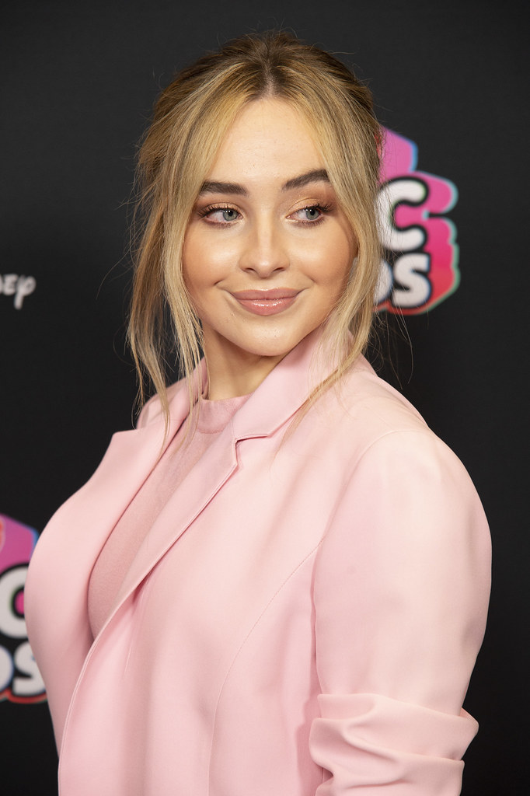
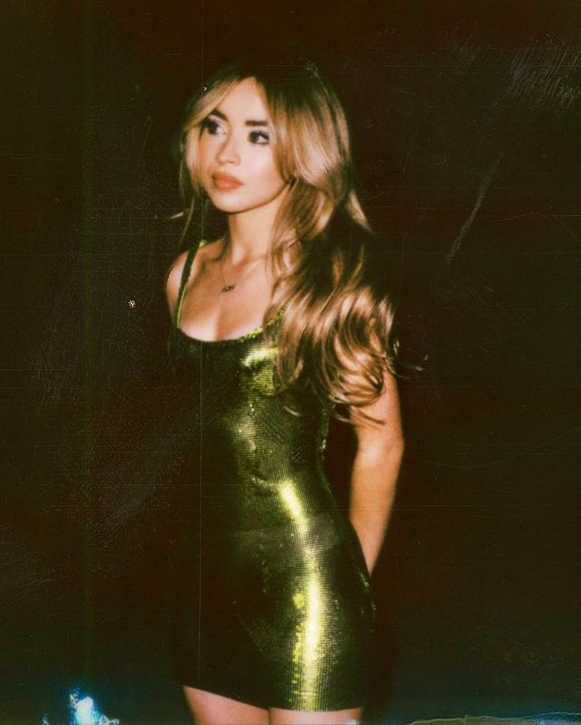
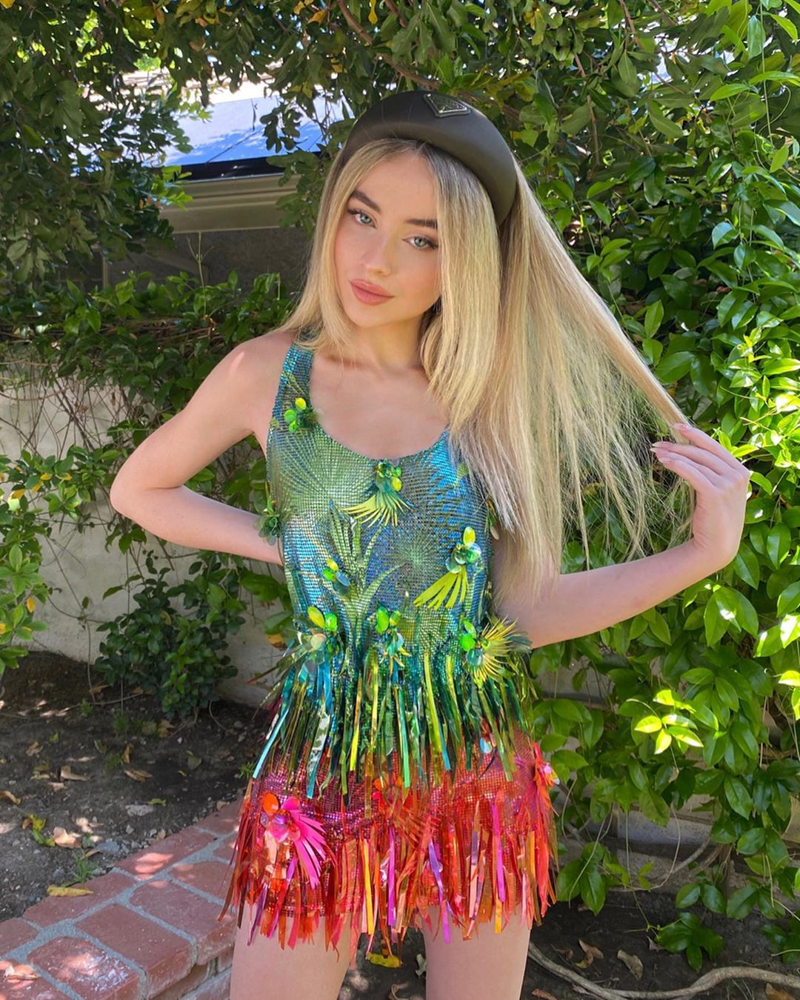
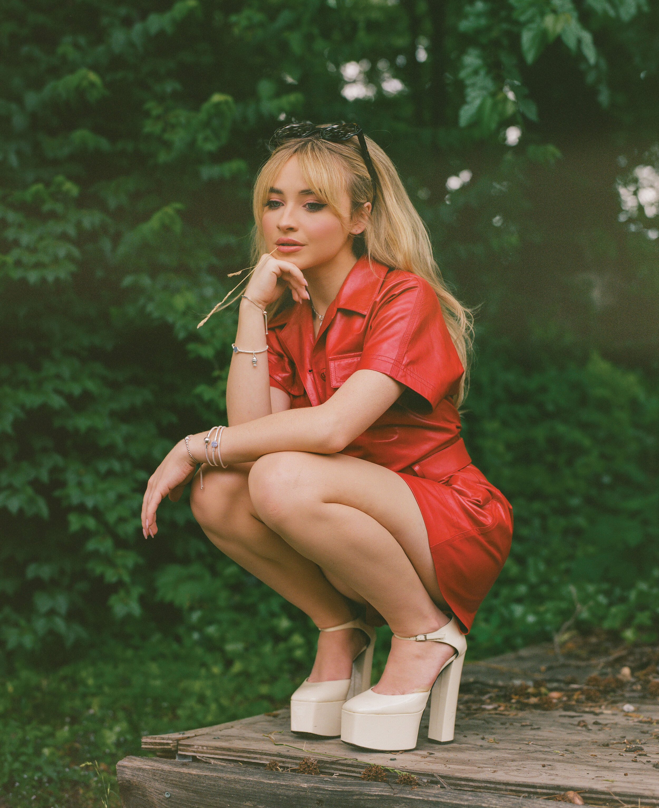
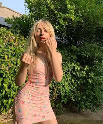
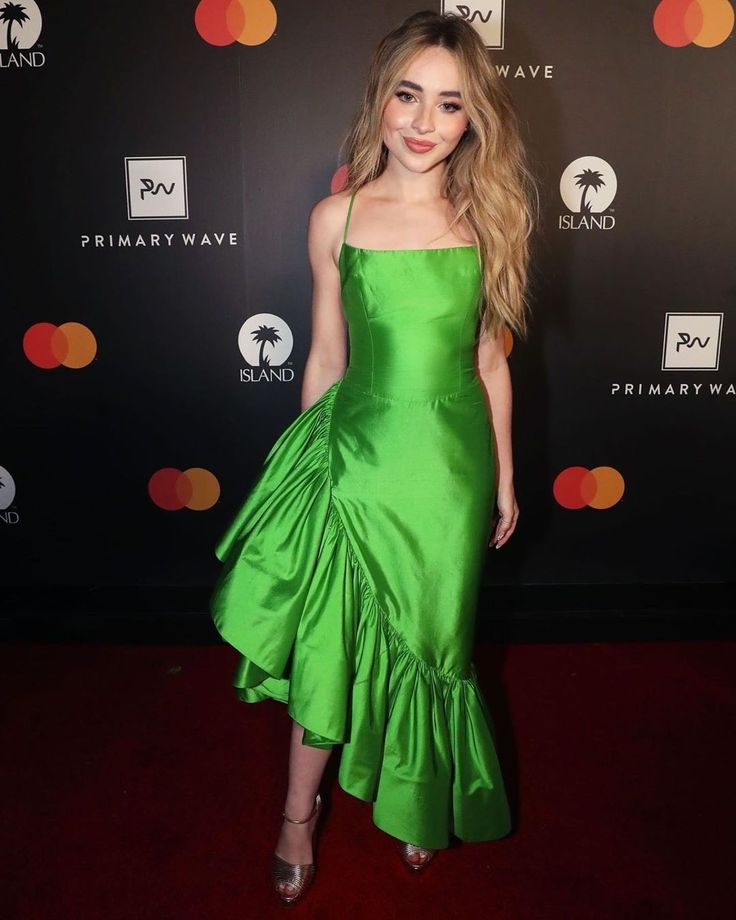

This page contains my favorites from Sabrina's style and more information about her career.
Sabrina Ann Lynn Carpenter was born on May 11, 1999 in Leigh Valley, Pennslyvania. She is a Taurus. She has 2 sisters, and a dog named Goodwin. She is an American singer, song writer, and actress who plays piano, guitar, ukelele, and more. She primarily sings in the pop genre and has had a notable acting career starring in several Netflix and independent films as well as her notable appearance in the Disney Channel show Girl Meeets World. Her debut album was called Eyes Wide Open with the popular hit single "Can't Blame A Girl For Trying" that she released when she was 16 years old.
My favorite quotation from Sabrina would be "What you wear onstage is a reflection of your artistry"
| 2021 GLAAD Media Awards | Versace Fall 2020 Ready To Wear Collection |  |
| Sabrina's 21st Birthday outfit | Versace Spring 2020 Ready To Wear Collection |  |
| Flaunt Magazine 2021 Garden Edition | Dior Pre Fall 2021 Collection |  |
| September 10th, 2020 Showing off her new bangs | Omighty Flower Power Tank Dress |  |
| Island Records x Primary Wave 2020 Pre- Grammy Party | Rasario Symmetrical Ruffle Trim Dress |  |
Instagram: @sabrinacarpenter
Twitter: @SabrinaAnnLynn
Tik Tok: @sabrinacarpenter
Website: https://www.sabrinacarpenter.com/